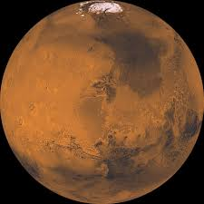
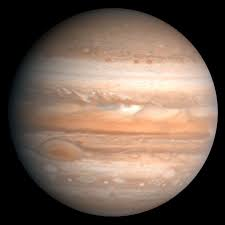
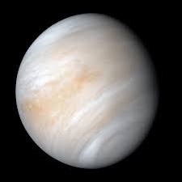
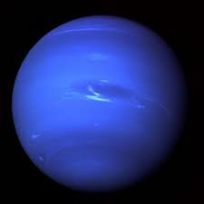

| Mars | Jupiter | Venus | Neptune | |
|---|---|---|---|---|
| Image |  |  |  |  |
| Mass: | 6.39 * 1023 kg | 1.898 * 1027 kg | 4.867 * 1024 kg | 1.024 * 1026 kg |
| Diameter | 6.779 * 103 km | 1.398 * 105 km | 1.210 * 104 km | 4.924 * 104 km |
| Distance from Sun: | 227.9 million km | 778.5 million km | 108.2 million km | 4.5 billion km |
| Surface Gravity (m/s2) | 3.71 m/s² | 24.79 m/s² | 8.87 m/s² | 11.15 m/s² |
| Orbital Period (length of year) | 687 Earth Days | 11.86 Earth Years | 224.7 Earth Days | 164.8 Earth Years |
| Number of Known Moons | 2 | 95 | 0 | 14 |
| Other fact: | Has the largest volcano in the solar system (Olympus Mons) | Strongest magnetic field of any planet | Rotates backward compared to most planets | Fastest winds in the solar system (over 2,000 km/h) |